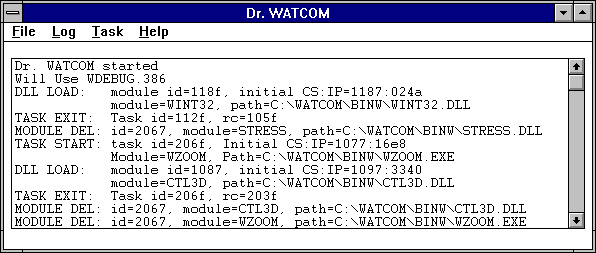
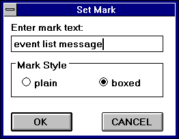
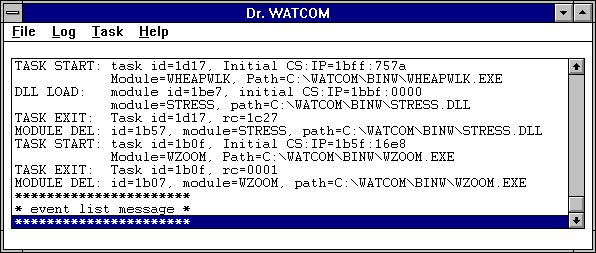
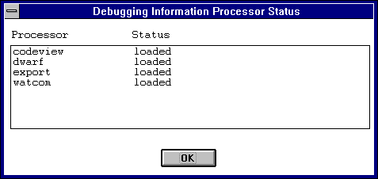
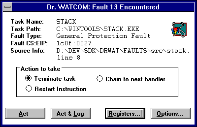
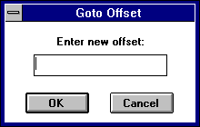
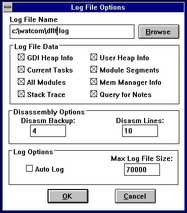
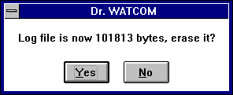

Index of Topics
- - W -
- Win32: Add New Process
Win32: Attaching Processes to Dr. Watcom
Win32: Auto Add Processes
Win32: Command Line
Win32: Creating A Log File Entry
Win32: Customizing the Log File
Win32: Debugging Information Processors
Win32: Dr. Watcom for Win32
Win32: Dr. Watcom: Applying Registers
Win32: Dr. Watcom: Changing the Registers
Win32: Dr. Watcom: Choosing the Log Viewer
Win32: Dr. Watcom: Clearing the Event List
Win32: Dr. Watcom: Exception Handling
Win32: Dr. Watcom: Marking the Event List
Win32: Dr. Watcom: Naming the Log File
Win32: Dr. Watcom: Other Options
Win32: Dr. Watcom: Saving Event List Information to a File
Win32: Dr. Watcom: Setting the Fonts
Win32: Dr. Watcom: Specifying the Log File Data
Win32: Dr. Watcom: Viewing Memory
Win32: Dr. Watcom: Working with Log Files
Win32: Erasing the Log File
Win32: Examining the Process Status
Win32: Performing Process Control
Win32: Process Control
Win32: Quitting Dr. Watcom
Win32: Resuming a Thread
Win32: Setting the Process Priority
Win32: Starting Dr. Watcom
Win32: Summarizing Process Memory Usage
Win32: Suspending a Thread
Win32: Terminating a Process
Win32: Terminating a Thread
Win32: The Dr. Watcom Menu Bar
Win32: Using Dr. Watcom
Win32: Using External Exception Handlers
Win32: Using the Annotate Log Dialog
Win32: Using the Debugging Information Processor Status dialog
Win32: Using the Dr. Watcom Window
Win32: Using the Memory Dump Dialog
Win32: Viewing the Current Log File
Win32: Viewing the Memory for a Process
Win32: Viewing the Threads for a Process
Win32: Dr. Watcom for Win32
The 32-bit version of Dr. Watcom is a post-mortem debugger for Win32 applications. When an exception occurs
in a program, a post-mortem debugger allows you, after the fact, to examine the state of both the program and the system
in order to determine the cause of the exception. In addition to being a debugging tool, Dr. Watcom is a system
utility that enables you to examine and modify process information.
- Note:
- Use the 32-bit version of Dr. Watcom to monitor native (Win32) applications running under Windows 9x and NT based operating
systems. Use the 16-bit version of Dr. Watcom to monitor 16-bit Windows (Win16) applications.
Win32: Using Dr. Watcom
This section discusses the following topics:
- Starting Dr. Watcom
- Quitting Dr. Watcom
- The Dr. Watcom Menu Bar
Dr. Watcom is designed to be used effectively while minimized. You can access some of Dr. Watcom's main
functionality using the system menu while the application is minimized. This includes the Log Current State, Log Options,
and Process Control menu items.
Win32: Starting Dr. Watcom
To start Dr. Watcom double click on the Dr. Watcom icon. This opens the Dr. Watcom window.
- Note:
- You can run only one instance of Dr. Watcom at a time.
Win32: Quitting Dr. Watcom
To exit Dr. Watcom, choose Exit from the File menu of the Dr. Watcom window.
The Menu bar consists of the following four menus:
- File
- Save to a file and work with the event list a file
Log
- Work with the log file
Process
- Work with processes currently running under Windows
Help
- Access on-line help information
Win32: Using the Dr. Watcom Window
When you open Dr. Watcom, a window appears which contains the event list. The event list records events generated
by processes to which Dr. Watcom is attached. To record these events you must first attach Dr. Watcom to
the desired processes. To perform this function, refer to the section entitled Win32: Attaching Processes to Dr. Watcom.
Some examples of events are errors, the starting and ending of threads, and the loading and unloading of DLLs.

Figure 1. The Dr. Watcom window contains the event list where occurring events are
recorded.
The following sections describe functions that allow you to manipulate the event list:
- Saving the Event List
- Clearing the Event List
- Marking the Event List
- Setting the Fonts
The Save items in the File menu allow you to save the contents of the event list to a text file. Saving information
to a file enables you to print the output later or annotate the text file on-line.
Choose Save from the File menu to save the event list information into the current working directory. A message
box appears indicating the path to which Dr. Watcom saved the file.
Choose Save As from the File menu to specify the file to which you want to save the information currently in the window.
This opens a Save As dialog box where you select the desired file. Click on OK when completed. A message
box appears indicating the path to which Dr. Watcom saved the event list.
Win32: Dr. Watcom: Clearing the Event List
Choose Clear List from the File menu to delete all information from the event list.
Win32: Dr. Watcom: Marking the Event List
Use the Mark function to annotate the information in the event list by entering text into it.
- To mark the event list :
-
(1)
- Choose Mark from the File menu.
This opens the Set Mark dialog box.

Figure 2. With the Set Mark dialog, you can annotate the event list by entering text and
choosing a mark style.
(2)
- Type the desired text in the Enter Mark Text field.
The text you enter will appear at the end of the event list
(3)
- Select the desired Mark Style option.
These options determine how the entered text is formatted when it is added to the event list When the boxed option is
selected, the text is displayed bordered by asterisks. With this option the text is easier to find. When the
plain option is selected, the text is displayed as it is entered.
(4)
- Click on OK when completed.
The Set Mark dialog closes and the text in the dialog appears at the end of the event list.

Figure 3. Text you enter in the Set Mark dialog appears in the event list in the selected
style.
Win32: Dr. Watcom: Setting the Fonts
The Set Font item in the File menu allows you to set the font, style, and size for the text in the Dr. Watcom window.
Choosing this item opens the Font dialog box. Select the desired font details and click on OK to close the dialog
and apply the fonts.
Debugging Information Processors (DIP's) are Dynamic Link Libraries that Dr. Watcom loads to read debugging information.
Each DIP allows Dr. Watcom to read a different type of debugging information.
Choosing the Show DIP Status item from the File menu displays the Debugging Information Processor Status dialog.

Figure 4. The Debugging Information Processor Status dialog shows the DIP's Dr. Watcom
has loaded.
This dialog contains a list of all the DIP's that Dr. Watcom attempted to load at startup and the results of
those loads. If Dr. Watcom was unable to load a particular DIP then the dialog will show the reason for the failure.
Dr. Watcom can only read a given type of debugging information if it has successfully loaded the appropriate
DIP.
Win32: Dr. Watcom: Exception Handling
When a fatal error, or exception, occurs in a process to which Dr. Watcom is attached, Dr. Watcom intercepts
the exception. By intercepting the exception, Dr. Watcom halts the program's execution to prevent it from terminating.
When an exception occurs, a Dr. Watcom exception dialog box appears on the screen indicating that a fatal error
has occurred. This dialog displays information about the error and gives you several options.

Figure 5. The exception dialog appears when a fatal error occurs in a program.
The information displayed about the error includes:
- Process Name
- The name of the process in which the error occurred.
Process ID
- The unique identifier associated with the process.
Fault Type
- The type of fault that occurred.
Fault CS:EIP
- The address of the instruction being executed when the fault occurred.
Source Info
- The source line on which the error occurred. This only appears if the program running contains debugging information
and the exception occurred on an assembly instruction that corresponds to a source line.
There are four buttons on the exception dialog that you can use to proceed.
- Act
- When the Act button is pressed Dr. Watcom's action is determined by the option currently selected in the "action
to take" section of the dialog. The following describes the action taken for each option.
- Terminate Task
- When the Terminate Task radio button is selected choosing Act causes the faulting process to be terminated immediately.
Restart Instruction
- When the Restart Instruction radio button is selected choosing Act causes the faulting process to restart execution starting
with the instruction pointed to by its CS:EIP. This option is primarily used to restart a process after you have changed
its register values using the Process Status dialog.
Chain to Next Handler
- A handler is a piece of code, a program, or a routine that gets called when an exception occurs. A process can have
several exception handlers. When the Chain to Next Handler radio button is selected choosing Act tells the operating
system to continue searching for a handler to deal with this exception. If no handler is found for the exception then
Dr. Watcom will redisplay the exception dialog to give you a second chance to deal with the exception. During
this second chance notification the chain to next handler option is not available. This option is useful for testing
your own exception handling code.
Act and Log
- Choosing the Act and Log button first creates a log file entry recording information about this exception then takes the same
action that would result from choosing the Act button.
Registers
- Select the Registers button to open the Process Status dialog. This dialog gives you additional information on the state
of the process when the exception occurred. From this window you can change the registers and flags and view the process's
address space. Refer to the section entitled Win32: Examining the Process Status
for further information.
Options
- Select the Options button to choose the information you want to write to the log file. This opens the Log Options dialog
explained in the section entitled Win32: Customizing the Log File.
Win32: Using External Exception Handlers
You can use the Continue Exceptions item in the file menu to tell Dr. Watcom to only report on exceptions that are
not handled by another exception handler. When this item is checked Dr. Watcom only displays an exception dialog
if the system is unable to find a handler for an exception. This behavior is the same as when Continue Exceptions is
not checked and chain to next handler is selected on the exception dialog.
Win32: Examining the Process Status
The Process Status dialog appears when you choose the Registers button in the exception dialog.
This dialog displays information in four sections:
- Source Information
- Registers
- Flags
- Instructions Around Fault
The Source Information section indicates the source file where the error occurred and the line of that source file.
In order to get source information, your program must contain debugging information. N/A appears in the Source Information
section if the program does not contain debugging information or the exception occurred on an assembly instruction that does
not correspond to a source file.
The Registers and Flags sections display information in the CPU at the time of the exception.
The Instructions Around Fault section displays the assembly instructions surrounding the instruction that was being
executed when the fault occurred. An asterisk marks the instruction to which the CS:EIP is currently pointing.
When the Show Symbols box is checked, Dr. Watcom tries to replace addresses in the assembly code with symbolic
names. Dr. Watcom can only replace addresses if the faulting module contained debugging information. If
this box is not checked, addresses appear as numeric values.
Win32: Dr. Watcom: Changing the Registers
In the Process Status dialog you can set up testing and debugging situations by changing the values of the registers and
flags. To change a register value simply enter a new value in the edit field that contains the current register value.
To change the state of a flag register just check or uncheck the check box associated with that flag. A flag
has a value of 1 when its check box is checked.
The register and flag values will not take effect until you choose OK on the Process Status dialog.
Win32: Dr. Watcom: Applying Registers
Selecting the Apply Registers button on the Process Status dialog after making changes to the registers and flags updates
the displayed information based on your changes.
Win32: Dr. Watcom: Viewing Memory
Selecting the View Memory button in the Process Status dialog opens a Memory Walk window which allows you to view the
address space of the process that caused the exception.
The information in this window appears under the following headings:
- Base
- This is the address where this memory object begins.
AllocBase
- The is the address where the allocation object begins. This tells you which allocation object a memory object belongs
to.
Size
- This is the size of the memory object.
Prot
- Codes indicating what you can do with the memory. The codes are:
- RO-Read Only
- NA-Not applicable
- ExRO-Executable and Read Only
- RW-Read, Write
- WC-Write, Copy
- Ex-Executable
- ExRW-Executable, Read, Write
- ExWC-Executable, Write, Copy
State
- The state of the memory. Values are:
- Free-range of addresses not being used
- Committed-range of addresses refers to memory that exists
- Reserved-this range of addresses has been set aside for future use but no memory exists for the addresses
Object
- Information indicating what the memory is being used for. This field is only completed if Dr. Watcom can provide
useful information.
Image
- The name of the module that owns the memory object. This field is only completed if Dr. Watcom can provide useful
information.
From this window you can select a memory object and view its contents. To view this information, double click on
the desired object. This opens a Memory Range window for the selected object. This window displays all of the
data stored in the selected object. The data appears in hexadecimal form. This window allows you to see if the
data in memory is what you believe it should be.
- Note:
- You can only view memory for an object whose state is Committed since there is no memory associated with other objects.
There are a number of functions you can perform in the Memory Range window. Following is a description of these
functions.
Dr. Watcom: Saving Window Information
The Save items in the File menu on the Memory Range window allows you to save the currently displayed information to a
text file. Choosing Save from the File menu on the Memory Range window saves the data in the window into the current
working directory. A message box appears indicating the path to which Dr. Watcom saved the file.
Choosing Save As from the File menu allows you to specify the file to which you want to save the data currently in
the window. This opens a Save As dialog box where you select the desired file. Click on OK when completed.
A message box appears indicating the path to which Dr. Watcom saved the file.
Dr. Watcom: Changing the Display
There are three ways to display the information in the Memory Range window. You can display the information as:
To change the form of the displayed data, select an item from the Display menu. When displaying data in bytes, the
data appears in the window as it physically appears in memory. When the data is displayed as words, the bytes in memory
are interpreted for you so that the values displayed are those that would be obtained by treating the memory as an array
of words. For example, if memory containing the values:
12 34 56 78 9A BC DE FF
was shown as words, the memory window would display:
3412 7856 BC9A FFDE
A similar interpretation is performed when the data is displayed as DWords. If the above memory was shown as
DWords, the memory window would display:
78563412 FFDEBC9A
This rearrangement of bytes does not affect the textual interpretation of the data shown on the right hand side of
the window.
Dr. Watcom: Setting the Offset
In the Memory Range window you can set the offset. This means that you can reposition the data so that specific
information appears at the top of the window. The offset you enter appears on the first line. It will not necessarily
be the first piece of information because rounding often occurs to avoid breaking a line.
- (1)
- Choose Set Offset from the menu bar on the Memory Display window.
This opens a Goto Offset dialog box.
(2)
- Enter the desired offset that you want to position at the top of the Memory Range window. You can enter the
offset in decimal or hexadecimal form. However, you must prefix hexadecimal values with 0x.
(3)
- Click on OK. This closes the dialog and positions the data as requested.

Figure 6. In the Goto Offset dialog, enter the offset you want to appear at the top of
the Memory Display window.
Win32: Dr. Watcom: Working with Log Files
A log file is a text file created by Dr. Watcom. The log file consists of entries that describe the state
of the system at the time the entry was made. Dr. Watcom gives you the opportunity to create a log file entry
each time an exception occurs. Such entries include information about the state of the program that caused the exception,
as well as information about the state of the system. You can create a log file entry at any time using the Log Current
State menu item. Log entries made in this way only contain information about the state of the system.
A log file is a permanent record of the state of the system and, possibly, your program. With a log file you
can make note of an error and return to it at a later time to examine and debug it.
Win32: Creating A Log File Entry
You can create a log file entry at any time by selecting Log Current state from the Log menu or the system menu.
You can also create a log file entry when an exception occurs by choosing the Act and Log button on the Exception dialog.
When a log entry is created the following dialogs may be displayed:
Win32: Using the Annotate Log Dialog
When the Query for notes option in the Log Options dialog is selected, an Annotate Log dialog box appears whenever a log
entry is created.
In the space provided, enter any explanatory text that you want to include in the log file. Press OK when completed.
This information appears under the heading "User Notes" at the beginning of the log file.
Win32: Using the Memory Dump Dialog
When the Memory Dump option in the Log Options dialog is selected, Dr. Watcom displays the Log Memory Dump dialog
whenever a log entry is created because of an exception. This dialog displays a list of all committed pages of memory
owned by the process that caused the exception.
This dialog allows you to select the memory objects you want to include in the log file entry. The data contained
in any memory object highlighted in the list box will be written to the log file. Clicking on an object in the list
box toggles it between selected and unselected.
The following buttons are available on the dialog:
- Select All
- Selects all memory for dumping to the log file
Clear All
- De-selects all memory currently selected in the dialog
Cancel
- Closes the dialog and continues writing to the log file but does not include information on any of the memory objects in the
dialog
OK
- Closes the dialog and writes selected objects to the log file
Win32: Viewing the Current Log File
Choosing View Log from the Log menu invokes an editor which allows you to view the current log file. You can select
this editor in the Log Viewer section of the Log Options dialog.
Win32: Erasing the Log File
To erase the current log file, choose Erase Log File from the Log menu. This erases the log file specified in the
Log Options dialog.
Choosing this item reveals a message box which asks you to verify that you want to erase the specified log file.
Select Yes to erase the log file or No to cancel the request.
Win32: Customizing the Log File
The Log Options item in the Log menu opens the Log Options dialog where you indicate to Dr. Watcom the information
you want to appear in log file entries. The Log Options item also appears in the system menu.

Figure 7. In the Log Options dialog, you customize the log file to which you write information.
The following sections describe the options that make up the Log Options dialog.
Win32: Dr. Watcom: Naming the Log File
In the Log File field, you specify the file to which Dr. Watcom writes the log file entries. The Browse button
to the right of this field opens the Pick log file name dialog. This dialog lets you browse your file structure and
select the path to which Dr. Watcom writes the log file entries.
Win32: Dr. Watcom: Choosing the Log Viewer
In the Log Viewer field, you specify the editor you want to invoke when you select View Log from the Log menu. The
Browse button to the right of this field opens the Pick log viewer dialog. This dialog lets you browse your file structure
and select the desired editor.
When View Log is selected from the Log menu, this editor will be invoked with the name of the log file passed as a
command line parameter.
Win32: Dr. Watcom: Specifying the Log File Data
In the Log File Data and Disassembly Options sections of the Log Options dialog, you select the information you want to
appear in the log file. The Log File Data section lists the various types of information that can be included in a
log file. If the check box for a piece of information is marked then that type of information will be written to the
log file. The options in this section are:
- Memory Dump
- When this box is checked, a Memory Dump dialog is displayed whenever a log file entry is made. This dialog allows you
to select the regions of memory you want to dump into the log file and is discussed in the section entitled Win32: Creating A Log File Entry.
This option only affects log file entries created because of an exception.
Query for notes
- When this box is checked, an Annotate Log dialog is displayed whenever a log file entry is made. This dialog lets you
enter text to be included in the log file entry. The Annotate Log dialog is discussed in the section entitled Win32: Creating A Log File Entry.
Loaded modules
- When this box is checked, each log file entry includes a list of all modules loaded for each process running in the system.
Current Processes
- When this box is checked, each log file entry includes a list of all processes currently running in the system, including
information about each process.
Mem Manager Info
- When this box is checked, log file entries will include summary information on the memory usage of the process that caused
the exception. This option affects only log file entries created because of an exception.
The fields in the Disassembly Options section relate to the disassembly section appearing in the log file. These
fields affect only log file entries made because of exceptions.
- The value in the Disasm Backup field tells Dr. Watcom the number of instructions before the fault you want written
to the log file.
- The value in the Disasm Lines field tells Dr. Watcom the total number of instructions you want it to show in the
log file. This value includes the instructions displayed before the fault.
Win32: Dr. Watcom: Other Options
When the Auto Log option is selected, Dr. Watcom creates a log file when an exception occurs and then terminates
the application instead of revealing the exception dialog.
The Max Log File Size option allows you to set the maximum size in bytes for a log file. When the log file exceeds
this size, Dr. Watcom prompts you with a message box when you start the application.

Figure 8. A message box prompts you to erase the log file when it becomes larger than the
maximum log file size specified on the Log File Options dialog.
This message box offers you the opportunity to delete your log file before it becomes uncontrollably large.
Win32: Attaching Processes to Dr. Watcom
Attaching processes to Dr. Watcom enables it to monitor events that occur within the processes. When processes
are attached, Dr. Watcom reports on events that occur within your process, such as DLL loads, thread creations, and
thread terminations. Attaching also allows Dr. Watcom to detect exceptions in your process.
There are four ways to attach processes to Dr. Watcom:
- Command line
- Add New process menu item
- Auto Add Process feature
- Process Control dialog
Dr. Watcom cannot detach from processes to which it is attached. The attachment exists until the process terminates.
If you try to close Dr. Watcom while it is attached to processes, a warning box appears listing the processes
to which Dr. Watcom is still attached.
Select Yes or No to continue.
Win32: Command Line
You can run a program and attach Dr. Watcom to it at start-up by passing the path of the executable to Dr.
Watcom as a command line parameter. For example, to run the program foo.exe and attach Dr. Watcom to
it, type:
drwatcom foo.exe
If you often want to run a certain program with Dr. Watcom attached to it then you can create a Program Manager
icon that runs Dr. Watcom with the name of the program as a command line parameter.
Double clicking on the icon when Dr. Watcom is not running causes Dr. Watcom to start-up. Dr.
Watcom then starts the specified process and attaches to it immediately.
Double clicking on the icon when there is already an instance of Dr. Watcom running causes the existing instance
of Dr. Watcom to run the specified process and attach to it. The second Dr. Watcom terminates immediately
so that only one instance of Dr. Watcom is left running.
Win32: Add New Process
The Add New Process item in the Process menu is another way to start a new process and attach to it immediately.
- To start a new process using this item:
-
(1)
- Choose Add New Process from the Process menu.
This opens the Load Process dialog where you browse the file structure.
(2)
- Select the program you want to start with Dr. Watcom attached.
(3)
- Click on OK.
This runs the selected program and attaches to it immediately.
Win32: Auto Add Processes
Checking the Auto Add Process item in the Process menu tells Dr. Watcom to attach to all new processes that start
in the system. When you activate this feature, Dr. Watcom checks the system every few seconds for new processes.
When it finds them, it attaches to them. Dr. Watcom will not automatically attach to processes that began
before the Auto Add Process item was checked.
The disadvantage of this feature is that in the few seconds between Dr. Watcom's process checks, your process
can start-up, run, and possibly cause an exception. When this occurs, a system dialog box appears reporting the error.
Selecting OK on this dialog immediately may not allow Dr. Watcom sufficient time to attach to the faulting process.
Wait for a few seconds and select the OK button on this dialog. The dialog closes and Dr. Watcom attaches
to the faulting process. The Dr. Watcom exception dialog then appears and you can proceed as usual.
- Note:
- Occasionally, when this feature is active a message box may appear saying, "An unexpected failure occurred while processing
a DebugActiveProcess API request. You may choose OK to terminate the process or Cancel to ignore the error".
This message results from a known limitation in Win32. If it appears simply choose Cancel.
Win32: Process Control
Using the Add Process button on the Process Control dialog, you can attach Dr. Watcom to any process that is currently
running in the system.
- To do this follow these instructions:
-
(1)
- Choose Process Control from the Process menu or the system menu.
This opens the Process Control dialog which lists all processes currently running under Windows.
(2)
- Click on the process to which you want Dr. Watcom to attach. You can only select one process at a time.
(3)
- Select the Add Process button.
This attaches Dr. Watcom to the selected process. An asterisk appears to the left of this process indicating
that Dr. Watcom is currently attached to it.
Selecting Process Control from the process menu or the system menu opens the Process Control dialog. This dialog
lists all processes currently running under Windows. Any process to which Dr. Watcom is attached is marked with
an asterisk. When you select a process by clicking on it, the Selected Process section of the dialog displays its Process
ID, Name, and Priority.
The Refresh button on this dialog updates the displayed process information.
From this dialog you can perform several functions. This section describes each function.
- Important:
- The Process Control functions are extremely powerful and give you the ability to perform functions that can make the operating
system unstable. Because of this, it is wise to save information before you attempt to use the Process Control functions.
Win32: Setting the Process Priority
Each process in the system has an assigned priority class. This priority class establishes the schedule for running
processes. The Set Priority button on the process Control dialog allows you to assign a priority to the selected process.
- To set a process's priority:
-
(1)
- Select the process from the Process List to which you want to assign a priority.
(2)
- Select the Set Priority button.
This opens the Set Process Priority dialog which displays the priority classes: idle, normal, high, and real time.
(3)
- Select the desired priority for the selected process.
(4)
- Click on OK to assign the priority and close the Set Process Priority dialog.
Win32: Terminating a Process
The Kill Process button on the Process Control dialog terminates a process selected from the Process List in the Process
Control dialog.
- To terminate a process:
-
(1)
- Choose Process Control from the Process menu.
This opens the Process Control dialog containing a list of all processes currently running in the system.
(2)
- Click once on the process you want to terminate to select it.
(3)
- Select the Kill Process button.
This terminates the selected process. The process's entry in the list may not be removed until you select the Refresh
button.
Win32: Viewing the Threads for a Process
A process is made up of one or more threads. The View Threads button in the Process Control dialog opens a Thread
Control dialog that lets you view and manipulate the threads for the selected process. With this dialog, you can terminate,
suspend, and resume threads.
- To view the threads for a process:
-
(1)
- Select the process from the Process List whose threads you want to view.
(2)
- Select the View Threads button from the Process Control dialog.
This opens the Thread Control dialog which displays the threads that make up the selected process.
Selecting a thread from the Threads list displays information for that thread in the Selected Thread section of the dialog.
This information is:
- tid (Thread Id)
- A unique identifier assigned by the operating system to each thread in the system.
State
- Indicates the current state of the thread. This tells you if the thread is currently ready for execution or if it is
waiting for some event.
Priority
- The thread's current priority class
Use the Refresh button to update the information displayed in the Thread Control dialog.
Win32: Terminating a Thread
Use the Kill Thread button to terminate a thread.
To terminate a thread, select the desired thread from the Threads list and select the Kill Thread button.
Win32: Suspending a Thread
Each thread has a suspend count. A thread can only be scheduled for execution when its suspend count is zero.
To increment a thread's suspend count, select the thread on the list in the Thread Control dialog and press the Suspend button.
Win32: Resuming a Thread
Each thread has a suspend count. A thread can only be scheduled for execution when its suspend count is zero.
To decrement a thread's suspend count, select the thread on the list in the Thread Control dialog and press the Resume button.
Win32: Viewing the Memory for a Process
Selecting the View Memory button on the Process Control dialog opens a Memory Walk window for the currently selected process.
For information on this window, see the section entitled Win32: Dr. Watcom: Viewing Memory.
Win32: Summarizing Process Memory Usage
Selecting the Memory Info button on the Process Control dialog opens a Memory Information dialog box. This dialog
provides a breakdown of the memory usage for the process selected from the Process List.
To view this memory information, select the desired process from the Process List and select the Memory Info button.
The Memory Information dialog displays information in the following sections:
- Mapped and Committed memory
- Reserved Memory
- Memory Usage by Module (Address Space)
The Mapped and Committed section displays the amount of committed memory the application is using broken down by its protection.
The Reserved section displays the amount a memory reserved but not yet committed. This information is broken
down by its protection.
In the Address Space section of this dialog, you can view the memory usage of each module that the selected process
currently has loaded. The combo box in this section lists all modules the process has loaded. Selecting a module
from the combo box displays a summary of its memory usage. Selecting the All Images item in the combo box displays
the total memory usage by all loaded modules listed in the combo box.
Use the Refresh button to update the information displayed in the Memory Information dialog box.